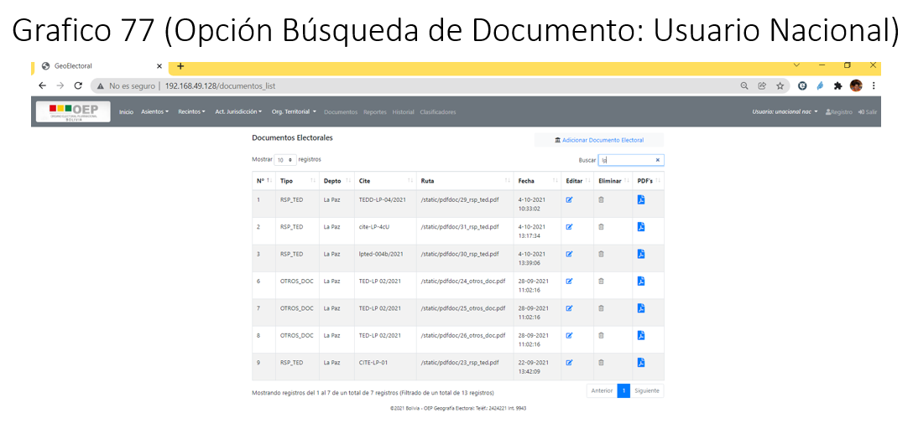

7. Documentos
a. Usuario Nacional
El presente usuario tendrá activo las opciones:
Documento
{kind=link}
Opción Documento
A través de esta opción, se podrá registrar los documentos que respalden la aprobación de creación, modificación respecto a Asientos y Recintos.
Adicionar nuevo Documento
A través de opción podrá registrar un nuevo Documento.
Procedimiento para el Registro de un Documento:
Paso 1: Para el registro de un nuevo documento, debe seleccionar el Tipo de Documento, el departamento, luego seleccionar el documento PDF adjunto.
Paso 2: Una vez registrado todos los datos se debe presionar en el botón Aceptar, para registrar el nuevo documento.
{kind=link}
Modificar Documento
A través de opción podrá modificar un Documento.
Procedimiento para la Modificación de un Documento:
Paso 1: Para modificar un documento, deberá hacer click en el icono Editar, el cual le llevara al formulario de modificación del documento.
Paso 2: Una vez realizado los cambios a los datos del documento, se procederá a aceptar los cambios a través del botón Aceptar, el cual le permitirá guardar los cambios realizados en los datos del documento.
Nota.- Si no requiere que se modifiquen los datos se deberá presionar en el botón Cancelar, para eliminar cualquier cambio realizado en el formulario de modificación del Documento.
{kind=link}
Eliminar Documento
Esta opción le permitirá eliminar los documentos, cabe hacer notar que solo podrán ser eliminados los documentos que no hayan sido asignados como respaldo en la creación y/o modificación de Asientos y Recintos.
A través de la aplicación se bloquea la eliminación a aquellos documentos que fueron asignados.
Procedimiento para la Eliminación de un Documento:
Paso 1: Para realizar la eliminación de un documento se deberá hacer click en el botón Eliminar, esto generara la siguiente ventana,
{kind=link}
El cual le consultara la confirmación o no de la eliminación.
Paso 2: Para confirmar la eliminación se deberá presionar en el botón Eliminar, caso contrario se deberá presionar el botón Cancelar.
Imprimir documento PDF
Procedimiento para la impresión de un Documento PDF:
Paso 1: Para realizar la impresión del documento PDF, deberá presionar en el botón PDF, esto generara el archivo PDF imprimible.
{kind=link}
Búsqueda de Documento(s)
Esta opción le permitirá realizar búsqueda de manera selectiva, es decir la búsqueda se podrá realizar por cualquiera de las columnas desplegadas.
Procedimiento para la Búsqueda de un Documento:
Paso 1: Para realizar la búsqueda de un determinado documento ó documentos deberá hacer click en el visor de búsqueda Buscar.
Paso 2: A través de este visor de búsqueda se podrá digitar en él, el parámetro por el cual se realizara la búsqueda.
{kind=link}
b. Usuario Departamental
El presente usuario tendrá activo las opciones:
Documento
Opción Documento
A través de esta opción, se podrá registrar los documentos del departamento con el cual se logeo el usuario TED, que respalden la aprobación de creación, modificación respecto a Asientos y Recintos.
Nota.- Todas las operaciones que se realizan en la presente opción son similares al del usuario TSE, solo que estas acciones están orientadas a los permisos asignados a los usuarios TED.